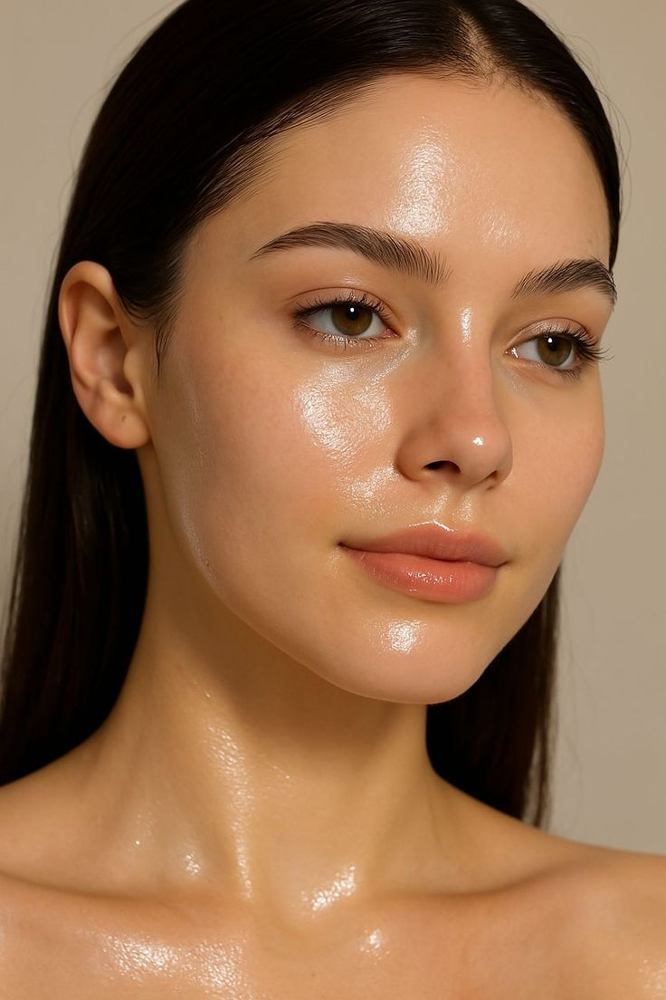

OILY SKIN
Oily skin produces excess sebum, giving the face a shiny appearance. This skin type is more prone to acne and enlarged pores.
Using oil-free products and regular cleansing helps maintain balance without stripping natural moisture.

Oily skin produces excess sebum, giving the face a shiny appearance. This skin type is more prone to acne and enlarged pores.
Using oil-free products and regular cleansing helps maintain balance without stripping natural moisture.